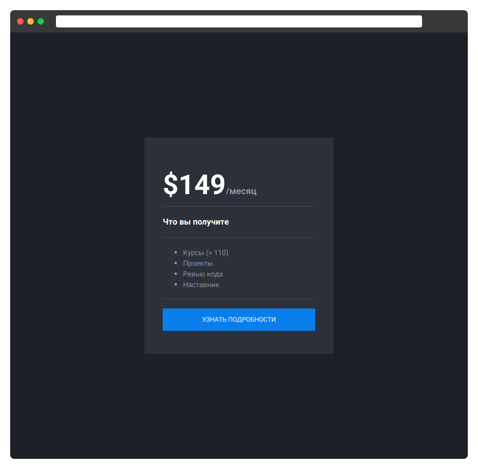

Создайте шаблон карточки прайсинга для Hexlet. Основные стили уже реализованы, но предыдущий разработчик не успел поработать с размерами и цветом элементов. Дополните стили по ТЗ. В результате выполнения задания у вас получится следующий блок:

Общие стили
- Для элемента
htmlустановите размер шрифта 18 пикселей с полуторным межстрочным интервалом. Установите шрифт без засечек. Фон имеет значение#1d2026. Основной цвет текста#8a94a7. - Элемент
bodyдолжен занимать всю доступную ширину и высоту страницы. Дополнительно сбросьте все значения внешних и внутренних отступов. - Заголовки первых трёх уровней не имеют внешних отступов. Внутренние отступы сверху и снизу должны быть равны размеру шрифта у элемента html.
- Список не имеет внешних отступов. Внутренние отступы сверху и снизу равны базовому значению шрифта. Остальные значения внутренних отступов остаются по умолчанию (как определено в user-agent stylesheets).
Стили карточки прайсинга
- Основная обёртка с классом
.cardимеет ширину в 300 пикселей. Внутренние отступы сверху и снизу в 2.5 раза больше размера шрифтаhtml. Слева и справа — в 2 раза больше размера шрифтаhtml. Блок должен иметь фон#2c3039. - Список с классом
.card-listимеет размер шрифта 14 пикселей. - Блок
.priceимеет размер шрифта 18 пикселей и межстрочный интервал 1. Элементspanвнутри блока имеет белый цвет и размер шрифта в три раза больше, чем у родителя. - Заголовок третьего уровня имеет белый цвет и должен быть размером 0.9 от значения родителя.
- Кнопка с классом
.btnимеет размер шрифта в0.7от размера шрифта у элементаhtml
Подсказки
- Вспомните разницу единиц измерения
emиrem - Для фона используйте свойство
background - Для цвета текста используйте свойство
color